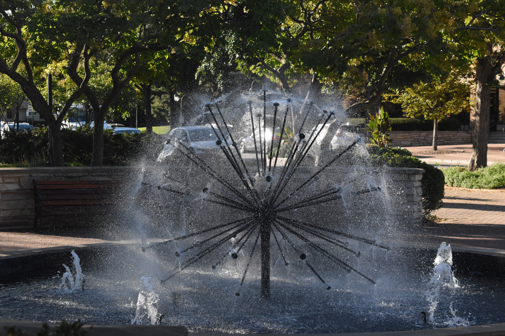
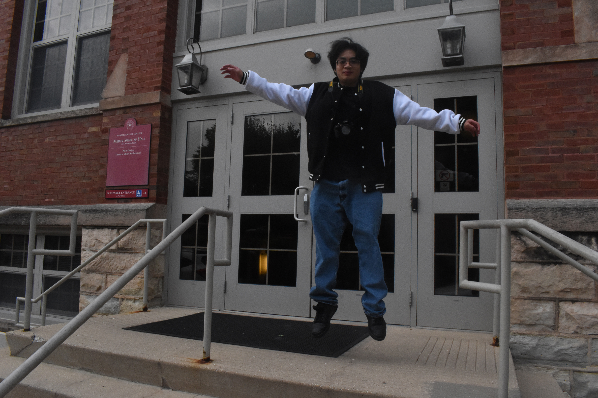
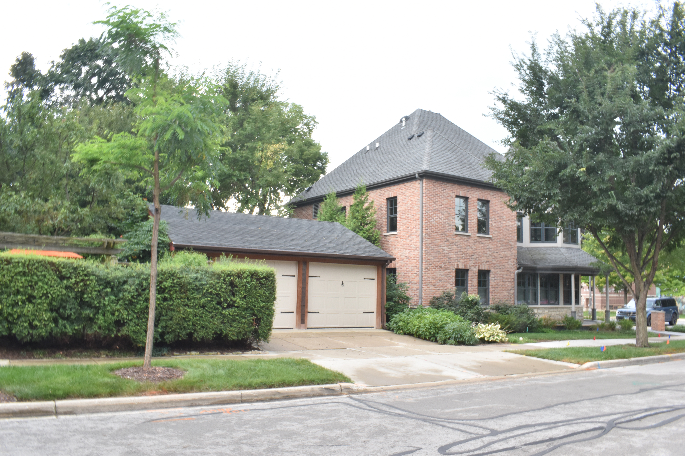
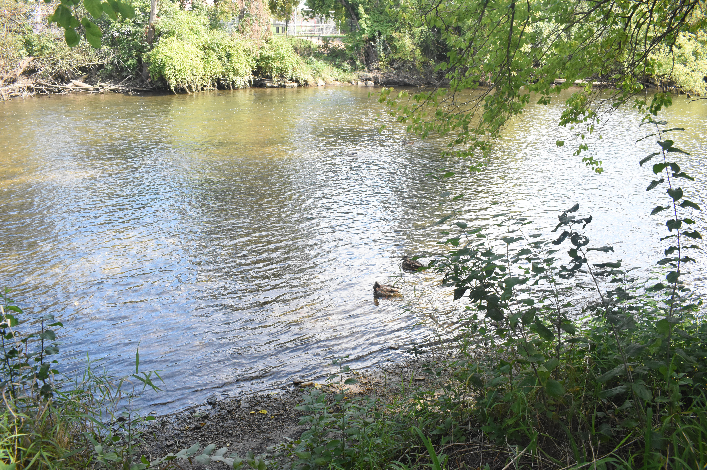

For my personal gallery I used the Dyson Nikon 3500 SLR because it was provided to me to use to take the best photos I can.




My Photos required me to learn the fundementals of design for photography and how do utilize a camera in the proper way in order to get proper photos with neither excess light ,blurriness or way to dark. In the end, I posted my very best photos on my photostream on my flickr account.